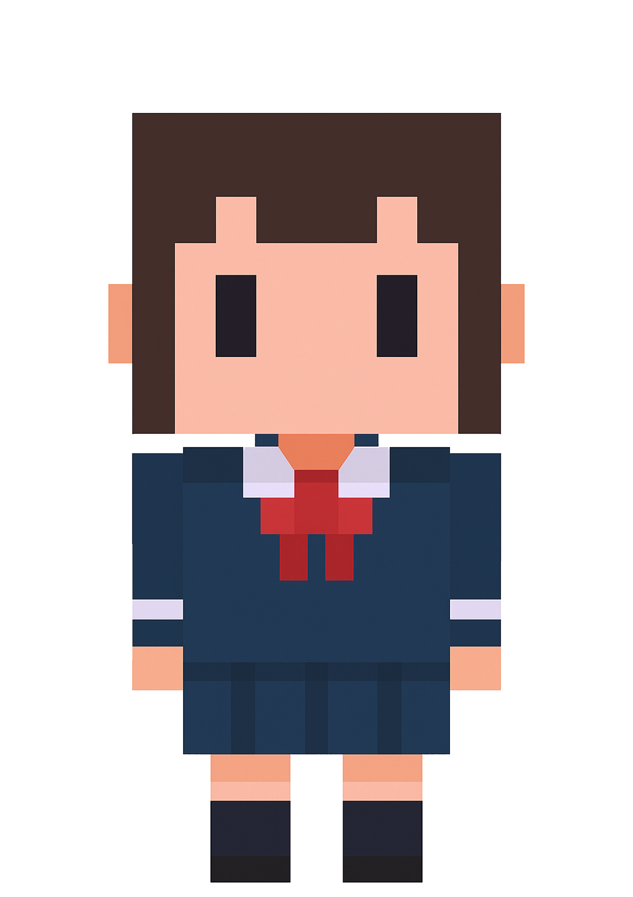

SYSTEM ERROR:
Unable to access file "student_log_0416_finalREAL.txt".
File may be corrupted or intentionally hidden.
Last modified: 2002.04.18 - 03:17:42 AM
Modified by: ???
Attempting to recover lost data...
Clue fragment recovered from debug cache: ID CODE: 200-3312
Advice: "Use Only When in Administrator Mode."
WARNING: Unauthorized file access detected.
ACCESS VIOLATION DETECTED.
Memory instability imminent.
System lockdown will occur if unauthorized actions persist.
Please choose:
[Press YES to forget] [Press ??? to remember]
Note: Ignoring this warning may result in permanent data loss or system corruption.
휴지통
제보자 한아름 납치미수 건.docx2025-04-28
첨부문서.pdf2025-04-26
제보자 한아름 납치미수 건
인트라넷 - 제보센터
익명 제보를 남겨주세요.
제보가 성공적으로 접수되었습니다!
제보 내역
그림판
캘린더
2003년 11월
메모장

안녕! 만나서 반가워. 내 이름은 '미래'. 지금부터 페이지 탐색을 도와줄거야!
수사기록
2003년 11월 5일. 실종.
오늘은 사건 발생 첫날이다.
포천. 익숙한 지형이지만, 언제나 무언가를 숨기기에 좋은 곳.
오후 6시 20분쯤, 한 중학생이 귀가 중 연락이 끊겼다고 한다.
마지막 통화에서는 “지름길로 간다”는 말만 남겼다.
지름길… 해도 진 시각이고,
그 길은 가로등 하나 없는 외딴 산책로라던데.
아이 혼자 걸었을 생각을 하면 마음이 무거워진다.
밤 9시 30분, 부모로부터 신고 접수.
내가 피해자 이름을 처음 들은 시점이기도 하다.
초동 수색은 자택 반경 1km 이내.
결과는 아무 소득 없음. 흔적도, 흔들림도 없다.
인근 CCTV 역시 확보된 것이 없다.
정말 누군가, 일부러 지운 것처럼 깔끔하다.
피해자는 성실하고 조용한 성격.
왕따도, 문제도 없었던 아이였다.
주변 누구도 갈등이나 특이사항을 말하지 않는다.
그렇게 아무 문제 없던 아이가,
어느 평범한 퇴근 시간에, 자취도 없이 사라졌다.
11월 28일. 실종 3주 만에, 첫 유류품 발견.
피해자의 가방. 가지런히 정돈된 상태로 길가에 놓여 있었다.
흙 묻은 흔적도 거의 없다. 마치 누군가가 ‘전시하듯’ 두고 간 느낌.
현장 부근은 그동안 여러 차례 수색했던 곳이다.
그때는 없었다. 누가 ‘뒤늦게’ 두고 간 게 분명하다.
정확히 누굴 향한 메시지인지 모르겠다.
그냥 발견되기를 바랐던 걸까? 아니면, 우리를 시험하는 걸까?
12월 22일. 또다시 발견.
이번엔 피해자의 휴대전화. 상태가 이상했다.
배터리는 분리되어 있었고, 통화 기록과 메시지 모두 삭제.
전문가가 아니면 알기 어려운 삭제 흔적.
범인이 IT 관련 지식이 있다는 정황.
위치도 애매하다. 유동 인구 없는 언덕길 구석, 흙 속에 반쯤 묻혀 있었다.
가방과 마찬가지로 ‘의도적으로’ 발견되게 둔 것 같다.
2004년 2월 8일. 결국 시신 발견.
포천시 축석낚시터 인근, 배수로 깊은 곳.
겨울 물 속에서도 형태는 비교적 유지돼 있었다.
외상 없음. 약물이나 질식 같은 내부 손상 가능성.
손톱엔 희미하게 남은 붉은 매니큐어.
손톱·발톱은 깔끔히 정리돼 있었고, 속옷과 스타킹은 사라진 상태.
이건 단순한 유기 사건이 아니다.
범인은 자신의 흔적을 숨기는 데 능숙했고, 무엇보다 피해자의 유류품을 전시하듯 배치했다.
어쩌면 이 사건은, 누군가의 오래 준비된 ‘무대’였는지도 모르겠다.
2019년 3월 30일
기록은 마무리되었다고 하지만, 끝난 느낌은 아니다.
사건은 종결됐고, 수사는 중단됐지만, 마음 어딘가는 여전히 그 밤에 멈춰 있다.
매년 같은 날이면 부모는 낡은 사진을 들고 경찰서를 찾는다.
처음엔 눈물을 흘리셨고, 그다음엔 눈물이 말랐고,
이젠 인사만 남는다. 그게 더 가슴 아프다.
사건 현장 근처를 다시 걸어봤다.
산책로는 여전히 조용하고, 가로등은 여전히 없고,
그저 풀만 조금 자라 있었다. 이상하게도, 그대로다.
처음 그 길을 따라 손전등 비추며 걸었던 밤이 떠오른다.
차디찬 공기, 낙엽 밟히는 소리, 누군가 나를 지켜보던 느낌.
범인은 끝내 잡히지 않았다.
지금도 어딘가에, 그 날의 어둠 속에, 잠겨 있을지도 모른다.
"완전히 잊지 못한다면, 아직 끝난 게 아니다."
나는 여전히 그날을 기억한다.
 종료
종료